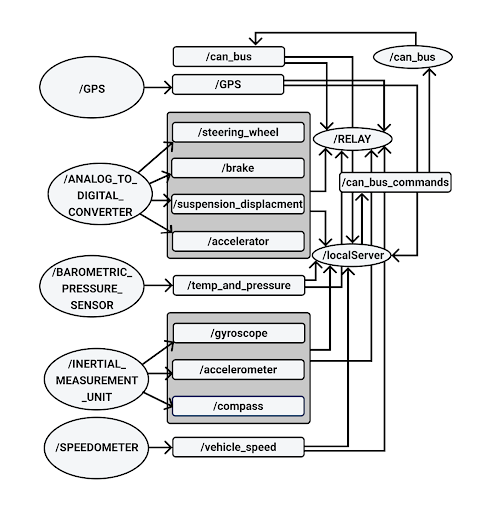
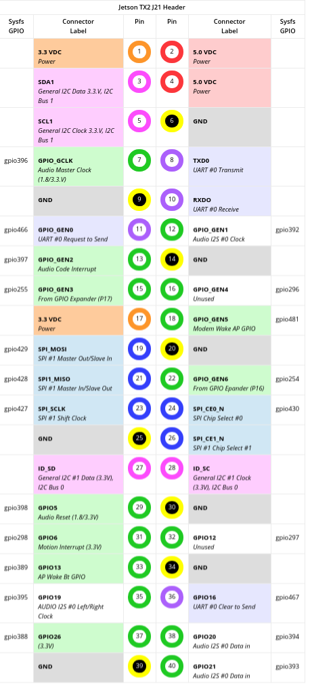

Formula Embedded Wiki
Table of Contents
About
Where's the code?
Here: Github Repo
What's the point of this?
Our objective was to build a Data Acquisition System (DAQ) capable of collecting, storing, and transmitting validated data from all on-board equipment to the cloud in real time utilizing a 4G/LTE network. In doing so, current and future CSUN FSAE teams will hold the capability to monitor and benchmark the performance of their vehicle design iterations.
Where do I run this?
This software is based around ROS and, is meant to run on an Nvidia Jetson Tx2. In addition to this SOC there are other sensors and boards necessary to communicate with other parts of the system. For a full parts list refer to the internal documention found on the Google Drive. If you happen to be visiting take a look below to get an idea of what hardware was used to create this project.
FAQ
Why ROS?
This is the most commonly asked question we get by other computer science students or engineers. The answer to that question is that it provides an excellent means of inter-process communication so that multiple processes written in different languages can communicate efficiently and reliably. Additionally it allows for the software to be expanded upon so that future teams can focus on implementing features such as self-driving, collision detection, etc. Lastly it enables us to reuse software so we can focus on adding features to our system without compromising its reliability.
Why the Nvidia Jetson?
This was chosen with a couple of considerations in mind such as I/O availability, flexibility, and speed. It provides all of the necessary means of communication with our sensors and ECUs found on our electric vehicle.
ROS
ROS Layout

Development Philosophy
We keep a few things in mind when designing and implementing new features.
- How maintainable each node will be in the future.
- How reusable each node will be in the future.
Understanding how ROS messages and processes function is essential in making wise design decisions. Most people are quick to think that by eliminating ROS Nodes the system will become more efficent however this isn't always the case. Additionally it's important to keep in mind that a monolithic system makes each node more difficult to maintain and reduces the reusebility of the software. Therefore when looking to improve the system by either adding additional functionality or making improvements to performance it's important to make sure that each node performs only a single function (e.g. getting data from a single device and publishing its data).
The rest of the sections of the wiki will not necessarily describe individual ROS nodes but instead describe parts of the system refrencing ROS nodes along the way that handle that part of the system. NOTE to maintainers: Update the ROS diagram you wont be the only person developing this so keep the next person informed.
How to get started running ROS?
This part of the wiki will assume you have a working OS running with all of the necessary
kernel modules enabled in order to interface with the appropriate hardware. For a guide on
this sort of stuff look at the "Helpful Links" part of the wiki. Additionally at the time
of writing26 January 2019
How do I install all the necessary ROS packages?
- See the helpful links section on installing ROS on the tx2
- Otherwise a not so helpful link to get started can be found here: DIY Installation
How do I use Nodejs ROS nodes?
- Make sure node is installed. See helpful links.
- Make sure your Node modules are installed.
- Check that your CMakeList includes your node files. See helpful links.
How do I compile my code?
- Make sure the CMakeList File is correctly configured.
- Make sure you
$ source devel/setup.bashfrom thecatkin_wsdirectory of the project. - Run
$ catkin_make - Otherwise see the helpful links.
How do I run my code?
Prereq: *Always run $ source devel/setup.bash from catkin_ws *
- Make sure ros core is running:
$ roscore - To run each process run
$ rosrun fsae_electric_vehicle **Name of your node**(if its nodejs add the .js extension likewise for python)
I'm tired of running each process one by one!
You'll have to write your own roslaunch file. Be sure to consult the helpful links but looking at the current one will give you some hints.
Can Bus
CAN Transceiver

MCP-2551 CAN Board
Two Can Bus transceivers were used on this system. One was used to communicate to the Motor Controller Unit and the other was meant for future expansion.
Wiring
- These transceivers are connected to the Jetson Tx2 using the J26 header.
- See
J21/J26 Pinoutsection for pinout images
Can Bus 0
| Device Pin | Jetson Pin |
|---|---|
| 5v | Arduino 5v pin |
| GND | (J26 Header) 11 |
| CANRX | (J26 Header) 5 |
| CANTX | (J26 Header) 7 |
Can Bus 1
| Device Pin | Jetson Pin |
|---|---|
| 5v | NOT CURRENTLY USED |
| GND | (J26 Header) 21 |
| CANRX | (J26 Header) 15 |
| CANTX | (J26 Header) 17 |
Software
The software used to interact with the MCU is held in the ROS node titled CAN_BUS.
This node is responsible from sending and receiving messages from the MCU (Motor Control Unit)
as well as the BMS (Battery Management System) via the 5 pin Can Bus port on the Unitek motor
controller. This Node receives messages from the web based node and publishes data to
the web node responsible from telemetry and sends messages out to the rest of the ECU's mentioned above.
IMU
10 DOF IMU

Waveshare 10 DOF IMU (C)
This sensor was chosen as it's directly compatible with the jetson via I2C. It currently is installed on I2C bus 1. This is made up of both the MPU-9255 (gyro, accel, compass) and the BMP280 (pressure sensor).
Wiring
- See
J21/J26 Pinoutsection for pinout images
I2C BUS 1
| Device Pin | Jetson Pin |
|---|---|
| VCC 5v | (J21 Header) 2 |
| GND | (J21 Header) 6 |
| SDA | (J21 Header) 3 |
| SCL | (J21 Header) 5 |
| INT | NOT USED |
| FSYNC | NOT USED |
Software
The software to support this device is actually split up into two ROS nodes. The
first is located in INERTIAL_MEASUREMENT_UNIT and the other is in BAROMETRIC_PRESSURE_SENSOR. This Waveshare
device is actually composed to two separate devices the MPU-9255 and the BMP280
which have two separate addresses on the I2C bus. The MPU-9255 is composed of a
gyroscope, accelerometer, and compass. The BMP280 is a pressure/temperature sensor.
Analog Sensors
Analog to Digital Converter

NCD 16 Channel Analog to Digital Converter
Wiring
- See
J21/J26 Pinoutsection for pinout images
I2C BUS 0
| Device Pin | Jetson Pin |
|---|---|
| GND | (J21 Header) 6 |
| VCC 5v | (J21 Header) 2 |
| SDA | (J21 Header) 3 |
| SCL | (J21 Header) 5 |
Software
Digital Sensors

Arduino Uno
An arduino uno with an I2C shield was used to interface with the digital sensors
4G LTE
4G Modem

Sierra Wireless MC7455
J21/J26 Pinout
J21 Header

J26 Header

Helpful Links
License
Formula Embedded is relased under the GNU AFFERO GENERAL PUBLIC LICENSE.